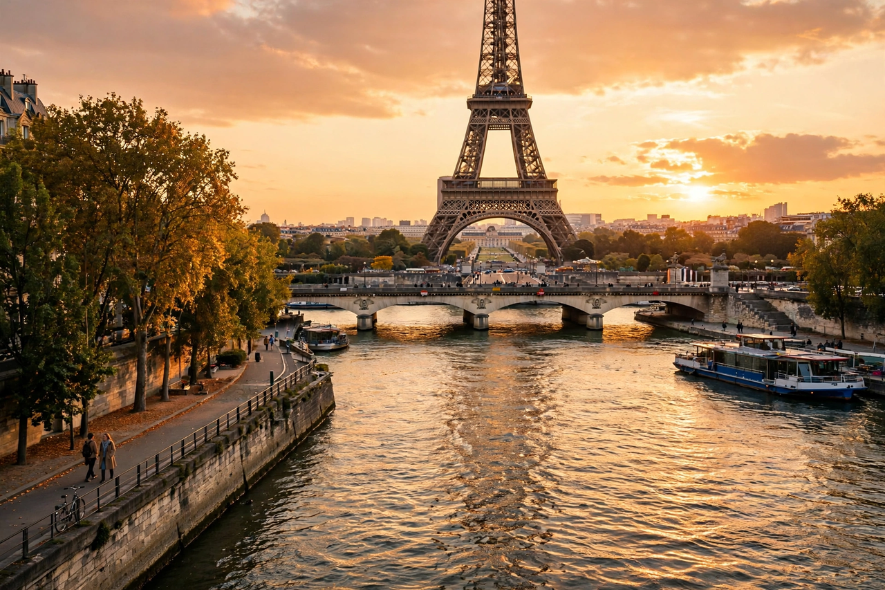

France
La France, officiellement République française, est un pays d'Europe de l'Ouest dont la capitale est Paris. Peuplée d'environ 68 millions d'habitants, elle est membre fondatrice de l'Union européenne et possède des territoires sur plusieurs continents.

[Image: Carte de France et la tour Eiffel à Paris]
Géographie et histoire
Le pays est bordé par l'océan Atlantique et la mer Méditerranée. Son histoire va de la Gaule antique à la Révolution de 1789 et aux Républiques successives.
Culture
La France est connue pour sa langue, sa littérature, sa gastronomie, son cinéma et son patrimoine, avec de nombreux sites classés au patrimoine mondial de l'UNESCO.